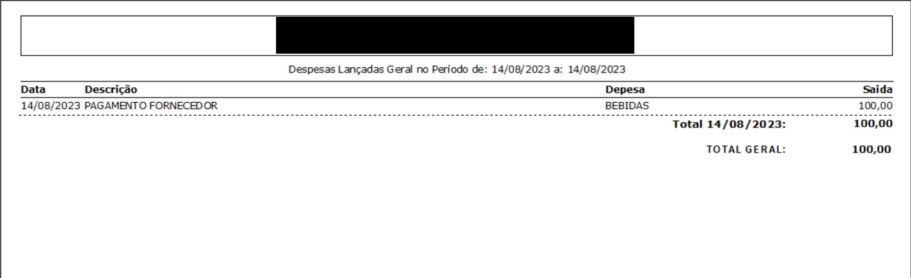
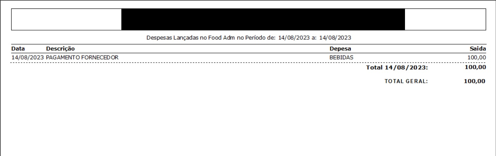

Movimentações de caixa
Primeiro clique em “MOVIMENTAÇÕES” (flecha verde) e depois clique em "MOVIMENTAÇÕES DE CAIXA" (flecha vermelha):

A tela a seguir irá aparecer. Nela temos as opções do retângulo amarelo: Entrada, Saída, Alteração, Pesquisar, Pesquisar por despesa, Excluir, Extrato, Relatório Despesas e Sair. No retângulo verde você pode ajustar para um dia ou um intervalo de dias. Além disso é possível filtrar os resultados por receita e despesa, clicando no local do retângulo vermelho.

Todas as opções serão descritas a seguir.
Alterando a data da busca
Aqui temos três maneiras de buscar por data:
• Clicando no calendário (retângulo azul): aqui você clica na data e depois clica em filtrar (flecha laranja)
• Clicar direto na data (retângulo verde) e digitar a data que desejar. Depois clicar em filtrar (flecha laranja)
• Clicar na flechas dos retângulos vermelhos: a da direita aumenta a data em 1 dia e a da esquerda diminui
a data em 1 dia. Ao final clique em filtrar (flecha laranja)

Filtrando por opções de exibição
Ao clicar no local da flecha verde aparecem as opções de filtro: "1-TODOS", "2-ENTRADAS" e "3-SAÍDAS". No nosso exemplo vamos clicar em "2-ENTRADAS" (flecha verdemelha).

A tela a seguir irá aparecer. Nela estão todas as entradas realizadas (retângulo vermelho) na data do retângulo verde. O valor total das entradas pode ser visto no retângulo azul:

Entrada
Ao clicar no local da flecha verde aparecem as opções de filtro: "1-TODOS", "2-ENTRADAS" e "3-SAÍDAS". No nosso exemplo vamos clicar em "2-ENTRADAS" (flecha verde).

Agora preencha os campos nos retângulos vermelhos: "Valor" e "Descrição". Não se esqueça de
conferir a data (retângulo verde)!
Quando terminar clique em "Concluir" (flecha verde)

Um exemplo de entrada preenchida está abaixo. Aqui consideramos que entrou troco no caixa no meio do movimento diário.

Agora o lançamento aparecerá na tela ao fundo e a tela para lançar novas entradas aparecerá. Para sair dela clique em "Cancelar" (flecha vermelha)

Saída
Ao clicar no local da flecha verde aparecem as opções de filtro: "1-TODOS", "2-ENTRADAS" e "3-SAÍDAS". No nosso exemplo vamos clicar em "2-ENTRADAS" (flecha vermelha).

A seguinte tela irá abrir. Nela precisamos preencher todos os campos nos retângulos vermelhos: "Valor", "Descrição", "Fornecedor [F3]" e "Despesa/Tipo de Saída [F3]". Agora nos retângulos verdes temos os itens que podem ser preenchidos: "N° Cheque:", "CHEQUE PRÉ-DATADO" e "CHEQUE CANCELADO".

Observe o exemplo de preenchimento abaixo. Agora clique em "Concluir" (flecha verde).

Alteração
Primeiro clique na operação que deseja alterar, no nosso exemplo seria a operação do retângulo vermelho. Agora clique em "Alteração" (flecha verde).

No exemplo abaixo alteramos o valor de R$100,00 para R$50,00 (veja o retângulo verde). Agora é só clicar em "Concluir" (flecha verde).

Agora conferimos se a alteração foi realizada. No retângulo verde vemos que deu certo, o valor está destacado na flecha vermelha.

Excluir
Primeiro clique sobre a operação que deseja excluir. No nosso exemplo é o item "PAGAMENTO FORNECEDOR" de R$50,00. Agora clique em "Excluir" (flecha verde).

Agora verifique se você quer excluir a operação na data que aparece no local do retângulo vermelho. Caso queira clique em "Sim" (flecha verde), do contrário clique em "Não".

Agora insira sua senha no retângulo vermelho e clique em "OK" (flecha vermelha).

Pronto! Após clicar em "Filtrar" (flecha vermelha) vemos que a operação realmente foi excluída.

Extrato
Para tirar o extrato, clique em "Extrato" (flecha verde).

A tela a seguira irá aparecer. Nela você pode ver o extrato com todas as operações do dia.

Relatório Despesas
Primeiro clique em "Relatório Despesas" (flecha verde).

A tela a sgeuir irá aparecer.

Para comrpeender melhor o que faz cada botão, veja a tabela abaixo:

Geral
Para ter acesso a todas as despesas do período clique em Geral (flecha verde):
Uma nova tela com as despesas do período irá aparecer:
Caixa
Para ter acesso as despesas do período lançadas pelo caixa clique em Caixa (flecha verde):

Uma nova tela com as despesas do período irá aparecer:

Um exemplo de outro dia com lançamento de despesas pelo caixa está abaixo. Os lançamentos que aparecem abaixo também apareceriam ao clicar em "GERAL".

Food Admin
Para ter acesso as despesas lançadas pelo administrativo no período clique em Food Adm (flecha verde):

Uma nova tela com as despesas do período irá aparecer:
Cancelar
Para voltar a tela de movimentações de caixa clique em "CANCELAR":

Sair
Agora clique em "Sair" (flecha vermelha):

Pronto! Agora você voltou para a tela inicial!